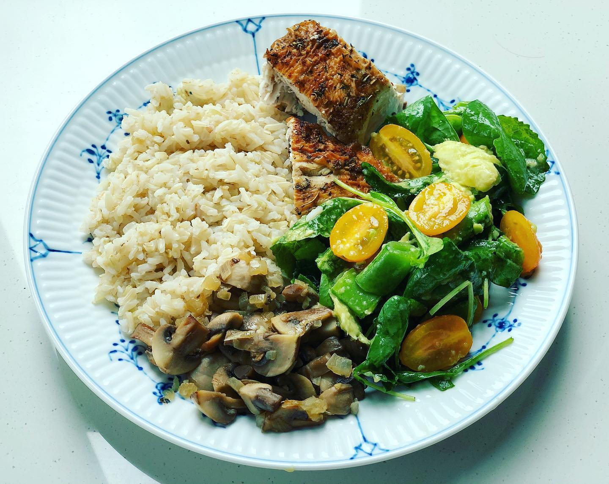
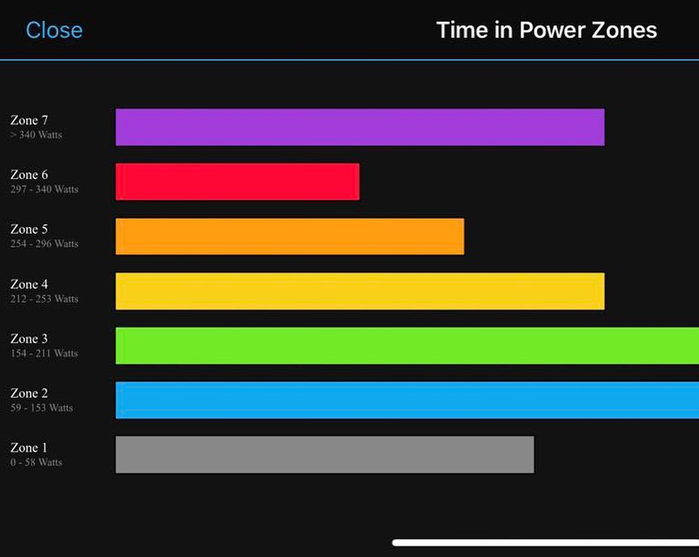
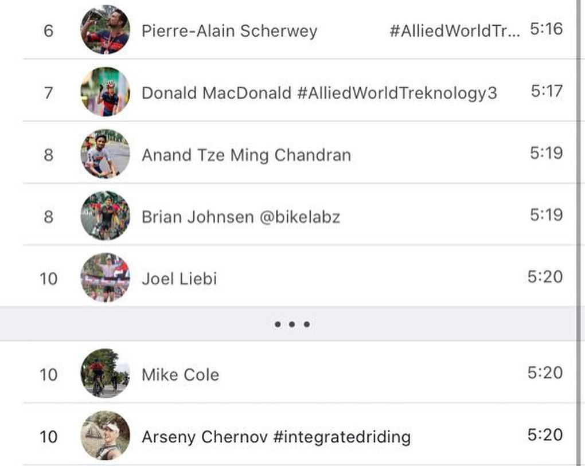

One of the best Mondays 😁 and here are 3️⃣ reasons why: 1️⃣ it is a public holiday in Singapore (happy Diwali ✨once again!) 2️⃣ both of us had great trainings but Arseny nailed his round the island ride 🚴🏼♂️ and joined TOP 10 on Strava leaderboard for the segment 💪🏼!!! 3️⃣And as a reward we had Super delicious homemade granola with low fat yogurt and smoothie for breakfast 😋 and equally delicious brown rice with baked chicken, salad and stir-fried brown mushrooms 🤤👌🏼 Hope your Monday was also good! __ #swimbikerun #triathlontraining #roundtheisland #bmcbikes #singapore #sgfoodie #foodsg #cookathome #homemadegranola #flatlaytoday #feedfeed #instafoodgram #endurancetraining
2019-10-28 20:18:42
Back to main page